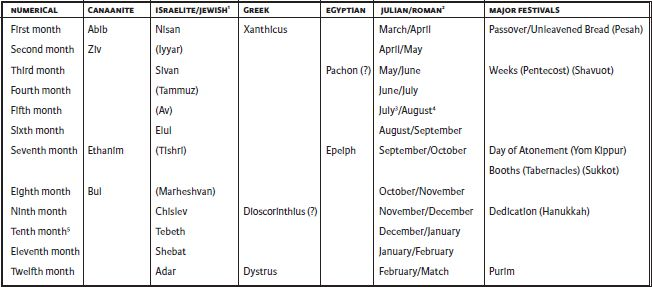

Time
including Calendar
The Bible has no systematic presentation of the measurements of time that its writers used. The evidence that it presents is thus incomplete, and, not surprisingly, inconsistent, in part because it was written over many centuries and represents several different cultures.
The Day
The Hebrew word for day (“yom”) can mean either a full day (in our system, twenty-four hours), or the daytime as opposed to the night (“laylah”). Parts of the day are also named, including dawn, morning, noon or midday, and afternoon; and likewise for night—evening and midnight; but we find no early evidence that the day was divided into regular parts (but see Judg 7:19; Jn 11:9). In the New Testament, day and night each had twelve hours (see Jn 11.9), which were numbered: see, e.g., Mt 20.3-6, where NRSV converts a series intended to mark out an entire day to our system (“nine o’clock,” etc.). . Given seasonal variations in daylight, hours did not have a standard length in this system. For most purposes the generic categories of dawn (Mk 6.48), morning (Mk 11.20), midday (or “sixth hour,” Mk 15.33; Jn 4.6), afternoon (“ninth,” Mk 15.34), or evening (Mk 4.35) suffice as temporal designations.
In most texts, a day begins at sunrise and ends the following sunrise; hence the phrase “day and night.” Only late in the biblical period was a day calculated from evening to evening, as is the sabbath in Jewish tradition (see Neh 13.19); hence the phrase “night and day” (e.g., 1 Kings 8.29; Lk 2.37).
The Week
The origins of the seven-day week are unknown, but it is firmly entrenched in biblical tradition, as the sabbath observance on the seventh day of the week shows. In the Bible the first six days of the week are called by their ordinal number but have no name; the seventh day is also called the sabbath.
The Months
As in English and many other languages, the two biblical Hebrew words for “month” are related to words having to do with the moon. The most frequently occurring word, “odesh,” comes from the root meaning “new”; a month thus began when the new moon appeared, and a religious festival celebrated its appearance (see Num 28.11–15). Less frequent is “yera,” from the word for “moon” (“yarea”). The Greek word for “month,” “meis,” also means “crescent moon.” In both Babylonian and Greek sources, a month begins with the first evening sighting of a lunar crescent in the west. A month therefore was a lunar month of twenty-nine or thirty days. In different periods, different names were used for individual months; moreover, the texts themselves do not give the names of all months. In earlier periods, Canaanite names were used; four of these occur in the biblical text. Beginning in the sixth century bce, Babylonian names were used, and continue to be used in Judaism today. In many periods the months were numbered as well as named, but here too there is some variation, depending on when the new year was celebrated. In the Hellenistic period, Greek names began to be used; two Egyptian names are also attested, both found only in the books of Maccabees and in nonbiblical sources. The table below gives the various names of the months used in the Bible and their corresponding English equivalents; names in parentheses are not found in the Bible but are those used in Judaism.

1 Derived from Babylonian names. Names in parentheses do not occur in the Bible.
2 While the Canaanite, Babylonian, and Israelite/Jewish calendars are based on the cycle of lunar months, the reform of the Roman calendar under Julius Caesar, which took effect on 1 January 45 bce, introduced a solar calendar of 365¼ days (divided into 30 or 31 days, with a short month of February with 28 or 29 days), guaranteeing that the months would remain correlated with the seasons. As a result its months do not correlate with months in the Babylonian/Judean calendar.
3 Originally Quintilis (“fifth”), this month was renamed Julius for Julius Caesar.
4 Originally Sextilis (“sixth”), this month was renamed “Augustus” by the emperor Augustus in 8 bce.
5 January is the first month of the Roman year. Previously the first month had been March, which explains the names September (seventh), October (eighth), November (ninth), and December (tenth).
The Year
A year usually consisted of twelve months. The twelve lunar months comprise fewer days than a solar year, so if a particular month is to occur at about the same time every solar year, then some adjustment needs to be made, either by lengthening some months, as in most modern calendars, or by adding an extra, intercalary month every few years, although this practice is not attested in the Bible. The year is roughly divided into the two seasons of summer and winter reflecting the agricultural cycle.
For most of the biblical period a new year began in the spring. The spring passover festival was celebrated in the first month (Ex 12.2), the day of atonement in the fall was celebrated in the seventh month (Lev 23:32), and the ninth month was in winter (Jer 36.22). A fall new year is implied in some sources, both biblical and nonbiblical. The later Jewish fall new year festival, Rosh Hashanah, is not mentioned in the Bible (but see its basis in Lev 23:24). A similar variation is found in English and other languages, in which the name of the twelfth month, December, literally means “the tenth month,” recalling an older system in which the new year was in the spring rather than January 1.
While astronomical and agricultural cycles provided divisions within a year and its seasons (Gen 1.14-19), locating events within a succession of years was more problematic. Systems of dating which attach events to “regnal years,” the year in the reign of a king (Isa 6.1; 7.1), or to individuals who held important offices (Lk 2.1-2; 3.1-2), or to major events often require additional information to suggest a date in a modern calendar. Without the global calendar and time-grid to which we were accustomed, both time and calendar were local. Correlating one civic calendar with another could be difficult if not impossible. Within the Greek world, Timaeus of Tauromenium (fourth to third century bce) produced a chronology that lined up Olympic victors, priestesses of Hera from Argos, kings of Sparta, and Athenian archons. Olympiads provided a grid for some Hellenistic historians. Varro (ca. 43 bce) provided Romans with what would be considered the “date” for the city’s founding in the Olympiad system, “the third year of the sixth Olympiad” (i.e. ca. 754/3 bce). We do not find efforts to make such chronological correlations between their past and that of others in the Bible. But in the fourth century ce, Eusebius of Caesarea and Jerome undertook the grand project of synchronizing Greek and Roman history with that of the Egyptians, the Medes, and the biblical kingdoms of Judah and Israel. Using an Olympiad numbering system, Jerome’s tables give the date of Abraham’s birth as ca. 2016 bce.
Longer Time-Spans
In biblical Hebrew, spatial metaphors are used for the past and the future. The past is “qedem,” literally that which is in front of one and therefore known, and the future is “ʾa arit” (or “ʾa aron”), literally that which is behind one and therefore unknown.
As in English, “a generation” is the period from a person’s birth to the birth of their first child; in biblical times this was roughly twenty years. However, the Roman equivalent, “saeculum,” could range from “generation” as the longest individual life-span within a community to a period that approximates our “century.” A heavenly sign such as the comet which appeared following the death of Julius Caesar in 44 bce might be read as signaling the transition between one “saeculum” and the next. Similarly the heavenly portent of angels announces that a new age is inaugurated with the birth of Jesus in Luke 2.13-15. Much longer periods of time are expressed by phrases such as “a thousand years, “a thousand generations,” and “forever.”
Michael D. Coogan and Pheme Perkins